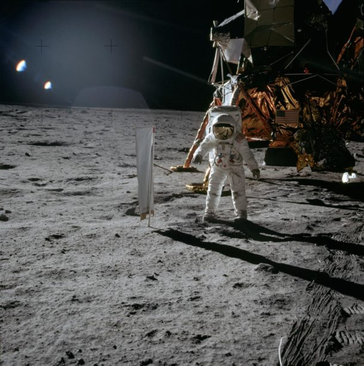
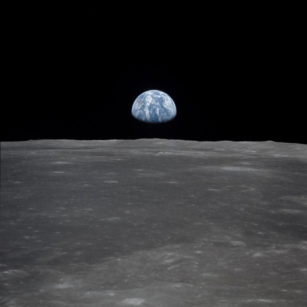

Le lancement historique de la mission Apollo 11 a porté trois astronautes vers la lune. Pour la première fois dans l'histoire de l'humanité, deux d'entre eux allaient poser le pied sur la surface lunaire alors que des millions de personnes dans le monde entier suivaient leurs pas à la télévision.
Les astronautes
L'équipage d'Apollo 11 était composé d'astronautes expérimentés. Tous les trois avaient déjà effectué des missions dans l'espace auparavant. Le Cmdt Neil Armstrong, 38 ans, avait déjà piloté Gemini 8, la première fois que deux véhicules ont accosté dans l'espace. Né le 5 août 1930 dans l'Ohio, Armstrong avait 38 ans lorsqu'il est devenu le premier civil à commander deux missions spatiales américaines. Le Col Edwin Eugene "Buzz" Aldrin, 39 ans, a été le premier astronaute avec un doctorat à voler dans l'espace. Né le 20 janvier 1930 dans le New Jersey, Aldrin a piloté Gemini 12, effectuant une marche de deux heures et vingt minutes dans l'espace pour démontrer qu'un astronaute pouvait travailler efficacement à l'extérieur du véhicule. Pour Apollo 11, il a servi comme pilote du module lunaire. Le pilote du module de commandement, le lieutenant-colonel Michael Collins, 38 ans, est né en Italie le 31 octobre 1930. Pilote de Gemini 10, Collins a passé près d'une heure et demie à l'extérieur de l'appareil lors d'une sortie dans l'espace et est devenu la première personne à rencontrer un autre vaisseau spatial en orbite.
De la Terre à la Lune
Les planificateurs de mission de la NASA ont étudié la surface lunaire pendant deux ans, à la recherche du meilleur endroit pour effectuer l'atterrissage historique. À l'aide de photographies à haute résolution prises par le satellite Lunar Orbiter et de gros plans prises par l'engin spatial Surveyor, ils ont réduit à trois les trente sites initiaux. Les facteurs d'influence comprenaient le nombre de cratères et de blocs rocheux, quelques hautes falaises ou collines et une surface relativement plate. La quantité de lumière du soleil a également été un facteur déterminant pour déterminer le meilleur moment pour atterrir sur la surface lunaire. Apollo 11 a été lancé du Centre spatial Kennedy en Floride à 9 h 32 HAE le 16 juillet 1969. Pendant le vol, l'équipage a fait deux émissions télévisées à partir de l'intérieur du navire, et une troisième à mesure qu'il se rapprochait de la lune, révélant la surface lunaire et la trajectoire d'approche prévue. Le 20 juillet, Armstrong et Aldrin entrèrent dans le module lunaire, surnommé "l'Aigle" et séparé du module de service de commandement - le "Columbia" - en direction de la surface lunaire. Le module lunaire s'est posé sur la mer lunaire de la Tranquillité, une grande région basaltique, à 16 h 17 HAE. Armstrong avertit Houston avec les mots historiques "Houston, Houston, Tranquility Base here. L'Aigle a atterri." Pendant les deux premières heures, Armstrong et Aldrin ont vérifié tous les systèmes, configuré le module lunaire pour le séjour sur la lune et mangé. Ils ont décidé de sauter les quatre heures de repos prévues pour explorer la surface. Le 20 juillet 1969, à 23 h 56, Armstrong descendit d'une échelle et prononça les mots "C'est un petit pas pour l'homme, un pas de géant pour l'humanité", et une caméra dans l'Eagle assura la couverture en direct. Aldrin suivit vingt minutes plus tard, Armstrong enregistrant sa descente. Armstrong avait la responsabilité de documenter le débarquement, de sorte que la plupart des images prises lors de la mission Apollo 11 étaient d'Aldrin.
Caractéristiques de Saturne V
| Hauteur | Diamètre | Masse | Coût |
| 109 m | 10,1 m | 3 038 500 kg | 7 milliards $ |